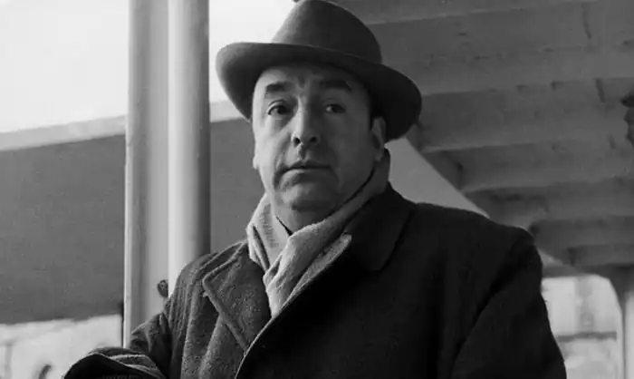
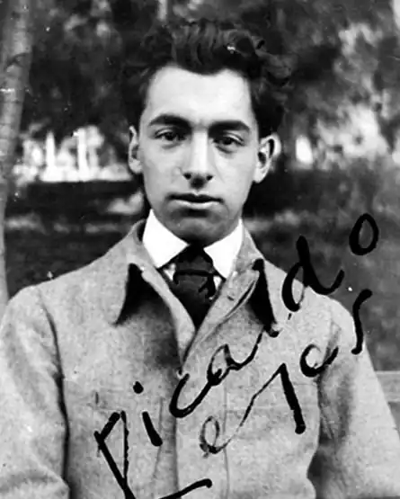

НЕРУДА, Пабло (Neruda, Pablo; автонім: Рейес Басуальто, Рікардо Елізер Нефталі Хейес — 12.07.1904, Парраль — 23.09.1973, Сантьяго де Чилі) — чилійський поет, лауреат Нобелівської премії 1971 р.
Дитинство й отроцтво Неруда проминули у містечку Темуко, що на півдні Чилі, куди, ставши вдівцем, переїхав у 1906 р. батько, Хосе дель Кармен Рейєс Моралес. Хоча майбутній поет і не пам'ятав матері (вона померла через півтора місяця після його народження), проте батько дожив до синової слави і завжди ставився до неї як до чогось минущого, вважаючи, що справжньою людиною легше стати, працюючи в полі, чи в лісі, чи, як він, — на залізниці. Уже перед смертю старий Хосе прошепотів синові чи не найголовнішу пораду: "Не гнись... вирівнюйся!"
Директором школи, де навчався Неруда, була Г. Містраль, також майбутній лауреат Нобелівської премії з літератури. Саме завдяки їй він уперше познайомився з російськими романістами та французькими символістами, тоді він і почав віршувати. "Коли мені виповнилося чотирнадцять років, батько вперто забороняв писати вірші, — згадував Неруда. — Він не хотів, щоб його син став поетом. Вирішивши опублікувати свої перші творіння, я почав шукати псевдонім, який би не викликав у нього ніяких підозр. В якомусь журналі я натрапив на чеське прізвище, не знаючи, що воно належить великому письменнику..." У 1921 p. Неруда подався у Сантьяго, де вступив у Педагогічний інститут при столичному університеті, вирішивши стати вчителем французької мови. Щоправда, він його так і не закінчив, оскільки зблизився з молодими поетами й анархістами. У плащі та крислатому капелюсі, успадкованому від батька, Неруда уособлював у той час романтичного поета-бунтівника. З 1927 p. Неруда став дипломатом, працював консулом у різних країнах. У 1930 р. він одружився із Марією Антуанетою Хагенаар, індонезійкою голландського походження. Початок іспанської війни зустрів у Мадриді (1936). Активно виступив на підтримку Іспанської республіки, за що позбувся своєї посади, а в 1937 р. спільно з однодумцями створив у Парижі об'єднання для підтримки іспанських республіканців. У 1940—1943 pp. — генеральний консул у Мексиці. У 1945 р. став членом комуністичної партії та сенатором. Після державного перевороту 1948 р. перебував на нелегальному становищі до того часу, поки не покинув країну, здійснивши перехід через Анди верхи па коні. У роки цієї еміграції поет багато подорожував країнами Європи. У 1949 p. Неруда став членом Всесвітньої Ради Миру, а в 1952 р. повернувся на батьківщину, де провадив активну літературну і політичну діяльність, 1969 р. — кандидат в президенти від комуністичної партії Чилі. У 1970— 1973 pp. — посол у Франції. Неруда помер від раку у своєму будинку, коли військові, здійснивши у країні переворот і знищивши президента С. Альенде, відмовилися пропустити до поета машину швидкої допомоги. У 1921 p. Неруда написав поему "Святкова пісня" ("La cancion de la fiesta"), що отримала головну премію на студентському конкурсі, однак його першим значним твором стала збірка ліричних поезій "Присмеркове" ("Crepusculario". 1923), де автор шукає сенс життя і намагається розібратися у подіях, що відбуваються у світ; Це стане посутньою ознакою творчості Н., котрий із невичерпним натхненням аналізує соціальну дійсність. Поет і себе відчуває та сприймає як невід'ємну частину світу: Я — слово стишене сумного краєвиду,я — серце змучене пустого небозводу;коли я йду в полях, відкривши душу вітру,в моїх артеріях річок шумують води.А ти куди ідеш? Немов блакитна глина, німотний простір ліг до рук різьбярки-ночіЗоря не спалахне. Мій зір заславши млінню,медові пахощі пливуть з полів Ленкоче.("Пахощі полів Ленкоче". пер. М. ЛитвинияіНеруда вдалося поєднати майстерне володіння поетичними засобами з особливою манерою зображення, яка робить поета зрозумілим і любленим не лише для знавців, а й непосвячених. Уже у збірці "Двадцять віршів кохання і одна пісня відчаю" ("Veinte poemas de amor y una cancion desesperada", 1924) очевидні оригінальність, сформованість його творчої манери, прагнення де справжнього поцейбічного осмислення людського буття і водночас сповнене смутку розуміння неможливості його абсолютного сповнення. За час своєї дипломатичної діяльності в різних країнах світу Неруда створив збірку "Місце перебування — Земля" ("Residenciaenlatierra". 1925— 1935), пронизану мотивами туги та самотності. Тут він намагається, розповідаючи про свої тугу і самоту, дати свідчення страхів та сумнівів свого часу, запропонувати їхнє соціальне обґрунтування: домінують гротескні образи хаосу та руйнації. Для збірки характерна асоціативність образів, несподіваність їхнього взаємозв'язку. Вона написана Неруда в традиціях герметичної поезії, для якої характерна принципова орієнтація на особливо підготованого читача, здатного розуміти багатошаровість поетичних образів, коли поет свідомо порушує звичні уявлення аудиторії, властиве їй сприйняття причинових, логічних та інших зв'язків навколишнього світу. Найбільший вплив на розвій особистості Неруда справила Іспанія. їй він присвятив поетичну збірку "Іспанія в ceрці" ("Espana en el corazdn". 1937), де висловив свою солідарність з боротьбою Іспанської республіки проти фашизму. Тут перед читачем та Іспанія, поділена на два непримиренно ворогуючі табори, яку Неруда побачив при зустрічі з цією країною. У 1938 р. Неруда розпочав роботу над епічною поемою про Чилі. Тут він яскравою і образною мовою говорить про велич своєї батьківщини та революційні традиції народу. Перебуваючи в підпіллі, Н. писав твір, який став книгою про Латинську Америку. Цей твір — "Вселюдська пісня" ("Canto general", 1950). Завершуючи її в умовах підпілля, Неруда хотів допомогти народам, навчити їх боротьбі проти феодалізму, відсталості, пригноблення, хотів показати їм можливість пошуків кращого життя. Поет оспівує Латинську Америку, її природу, соціальне життя. У цій поемі — сповідь поета, утвердження ідеалів боротьби за соціальну справедливість проти колоніальної політики великих держав світу. Твір суб'єктивний. Неруда написав те, про що розмірковував, що відчув, що в чомусь переосмислив, тому його твір став не лише книгою про Латинську Америку, а й сповіддю видатного громадянина, маніфестом великого патріота світу. Щось схоже, але на вужчому матеріалі Неруда зробить в "Оді споконвічним речам" ("Odas elementales", 1954—1957), де він уславлює явища буденного людського життя, наділяючи їх філософською значущістю й індивідуальними особливостями. Цією книгою відкривається нова сторінка творчості поета, котрий тяжів до філософської всеохопності та значущості, що отримає подальший розвиток у його збірці "Естра-вагаріо" (1958): Це і значить, що ми без краюна берег життя ступаєм,ми вічно новонароджені,і тримаєм даремно ми в ротістільки тихих імен,назв пустих, непотрібних,стільки літер горластих, імен, твоїх і моїх,стільки чорнильних написів...("А чи не багато назв?", пер. К. Дрюка)У повоєнний період найпліднішими стали кінець 50-х — 60-ті pp. До цього часу поет сягнув піку своєї майстерності. Це засвідчують збірки "Плавання і повернення" (1959), "Сто сонетів про кохання" (1960), "Каміння Чилі"(1961), автобіографічна поема "Меморіал Чорного острова" (1964) й ін. У них читач зауважує безумовне розширення меж поетичного світу Н., роздуми про сенс життя, образ оновлюваної природи, філософські роздуми про безліч загальних і окремішніх проблем людського буття: Як я помру, а ти живою будеш,як ти помреш, а я живим лишусь,більше землі не віддамо скорботі,є тільки та земля, де ми живем.Пил на пшениці і пісок пустелі,час, вітер і мандруюча вода несли нас, як посіяну зернину,—могли б ми розминутися навік.Цю сіножать, де зустріч відбулася,ми безмірам маленьким віддамо,але любов не скінчиться ніколи,як не було народження, то й смерті не буде в неї, бо вона — ріка,міняються лиш падоли та губи.("Сто сонетів про кохання", 92; пер. Д. Павличка)У 1971 p. Неруда став лауреатом Нобелівської премії з літератури "за поезію, що втілила в собі душу та долю цілого континенту". В офіційній заяві Шведської академії, зокрема, зазначалося: "Той, хто би заповзявся відшукати недоліки у поезії Неруда, не потратив би багато часу. Тому, хто би захотів знайти її сильні сторони, не довелося б витрачати часу зовсім". Для самого Неруда багато його творів мали стати "співаючими аркушами", у яких відображаються природа та настрої, роздуми автора про витоки людини та сенс її буття. У творчості Неруда зустрічаються різні епохи. Тут дається взнаки і життя поета, котрий пройшов через захоплення різними філософськими, політичними й естетичними теоріями. Замолоду Н. тяжів до анархістських угруповань, а в мистецтві — до авангардистських. Поет намагався осмислити ті явища, які існували у світі. Він не був прихильником безумовного заперечення чи руйнування, різного роду двозначностей. Творчість Неруда — приклад невпинних пошуків і активної позиції автора, його вміння шукати і знаходити найважливіші та найактуальніші питання творчості та життя.Українською мовою окремі твори Неруда переклали М. Бажан, М. Терещенко, Л. Первомайський, М. Литвинець, К. Дрок, М. Москаленко, П. Дорошко, А. Малишко, Д. Павличко, І. Драч, Н. Кащук, С. Борщевський, В. Колодій, П. Марусик, С Жолоб, М. Фішбейн, Б. Олександров, І. Костецький, В. Вовк та ін. А. Макаров